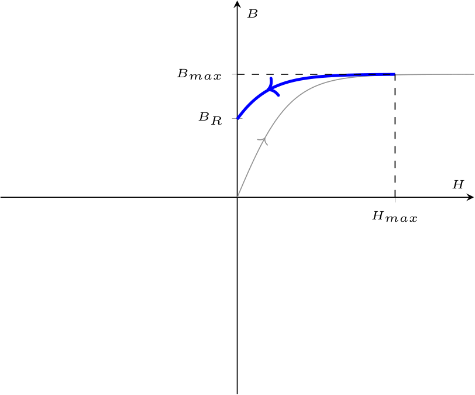

Definizione - Fasore
Un fasore è un numero complesso che rappresenta un segnale sinusoidale di una specifica frequenza.
È infatti possibile associare ad un generico segnale \( a(t)\) \[ a(t) = \hat{A} \cdot \cos(\omega t + \alpha) \] un numero complesso (\( \underline{ \ }\) indica che è un vettore, in questo caso bidimensionale) \[ \begin{array}{ccl} \underline{A} & = & \mathrm{Re} \left\{ \hat{A} \cdot \mathrm{e}^{\jmath \cdot (\omega \cdot t + \alpha)} \right\} \\ & = & \mathrm{Re} \left\{ \hat{A} \cdot \left( \cos(\omega \cdot t + \alpha) + \jmath \cdot \sin(\omega \cdot t + \alpha) \right) \right\} \\ & = & \hat{A} \cdot \cos(\omega \cdot t + \alpha) \end{array} \] Considerando inoltre che il valore di picco \( \hat{A}\) può essere scritto come \[ \hat{A} = \sqrt{2} \cdot A \] si ha che un generico segnale corrisponde a \[ a(t) = \sqrt{2} \cdot A \cdot \mathrm{Re}\left\{ \mathrm{e}^{\jmath \cdot (\omega \cdot t)} \cdot \mathrm{e}^{\jmath \cdot \alpha} \right\} \] si ha che è possibile "dare per scontato" i termini e le operazioni costanti (dato che la frequenza è costante), riducendo a \[ \underline{A} = A \cdot \mathrm{e}^{\jmath \cdot \alpha} \] che è il fasore corrispondente e graficandolo in un piano di Gauss si avrebbe \[ \underline{A} = A \cdot \left( \cos(\alpha) + \jmath \cdot \sin(\alpha) \right) \] si ottiene Considerando invece il numero complesso "originale", si avrebbe che "un vettore rotante" dipendente dal tempo in senso antiorario di velocità \( \omega\).
È infatti possibile associare ad un generico segnale \( a(t)\) \[ a(t) = \hat{A} \cdot \cos(\omega t + \alpha) \] un numero complesso (\( \underline{ \ }\) indica che è un vettore, in questo caso bidimensionale) \[ \begin{array}{ccl} \underline{A} & = & \mathrm{Re} \left\{ \hat{A} \cdot \mathrm{e}^{\jmath \cdot (\omega \cdot t + \alpha)} \right\} \\ & = & \mathrm{Re} \left\{ \hat{A} \cdot \left( \cos(\omega \cdot t + \alpha) + \jmath \cdot \sin(\omega \cdot t + \alpha) \right) \right\} \\ & = & \hat{A} \cdot \cos(\omega \cdot t + \alpha) \end{array} \] Considerando inoltre che il valore di picco \( \hat{A}\) può essere scritto come \[ \hat{A} = \sqrt{2} \cdot A \] si ha che un generico segnale corrisponde a \[ a(t) = \sqrt{2} \cdot A \cdot \mathrm{Re}\left\{ \mathrm{e}^{\jmath \cdot (\omega \cdot t)} \cdot \mathrm{e}^{\jmath \cdot \alpha} \right\} \] si ha che è possibile "dare per scontato" i termini e le operazioni costanti (dato che la frequenza è costante), riducendo a \[ \underline{A} = A \cdot \mathrm{e}^{\jmath \cdot \alpha} \] che è il fasore corrispondente e graficandolo in un piano di Gauss si avrebbe \[ \underline{A} = A \cdot \left( \cos(\alpha) + \jmath \cdot \sin(\alpha) \right) \] si ottiene

Definizione - Trasformata di Steinmetz
Formalmente, è possibile dimostrare la corrispondenza biunivoca tra dominio del tempo e dominio fasoriale. Genericamente, la trasformata di Steinmetz \( S[]\) è un operatore lineare tale che \[ S[a(t)] = \frac{\sqrt{2}}{T} \cdot \int_0^T a(t) \cdot \mathrm{e}^{-\jmath \cdot \omega \cdot t} \ dt \] e applicandolo ad un generico segnale \[ a(t) = \hat{A} \cdot \cos(\omega \cdot t + \alpha) \] si ha che \[ \begin{array}{ccl} S[a(t)] & = & \frac{\sqrt{2}}{T} \cdot \int_0^T a(t) \cdot \mathrm{e}^{-\jmath \cdot \omega \cdot t} \ dt \\ & = & \frac{\sqrt{2}}{T} \cdot \int_0^T \left( \hat{A} \cdot \cos(\omega \cdot t + \alpha) \right) \cdot \mathrm{e}^{-\jmath \cdot \omega \cdot t} \ dt \\ & = & \frac{\sqrt{2}}{T} \cdot \hat{A} \int_0^T \cos(\omega \cdot t + \alpha) \cdot \mathrm{e}^{-\jmath \cdot \omega \cdot t} \ dt \\ & \overset{\text{formula di Eulero}}{=} & \frac{\sqrt{2}}{T} \cdot \hat{A} \int_0^T \frac{\mathrm{e}^{\jmath \cdot (\omega \cdot t + \alpha)} + \mathrm{e}^{-\jmath \cdot (\omega \cdot t + \alpha)}}{2} \cdot \mathrm{e}^{-\jmath \cdot \omega \cdot t} \ dt \\ & = & \frac{\sqrt{2}}{T} \cdot \frac{\hat{A}}{2} \cdot \int_0^T \left( \mathrm{e}^{\jmath \cdot (\omega \cdot t + \alpha)} + \mathrm{e}^{-\jmath \cdot (\omega \cdot t + \alpha)} \right) \cdot \mathrm{e}^{-\jmath \cdot \omega \cdot t} \ dt \\ & = & \frac{\sqrt{2}}{T} \cdot \frac{\hat{A}}{2} \cdot \int_0^T \left[ \left( \mathrm{e}^{\jmath \cdot \omega \cdot t} \cdot \mathrm{e}^{\jmath \cdot \alpha} \right) + \left( \mathrm{e}^{-\jmath \cdot \omega \cdot t} \cdot \mathrm{e}^{\jmath \cdot \alpha} \right) \right] \cdot \mathrm{e}^{-\jmath \cdot \omega \cdot t} \ dt \\ & = & \frac{\sqrt{2}}{T} \cdot \frac{\hat{A}}{2} \cdot \int_0^T \left( \mathrm{e}^{\jmath \cdot \alpha} \right) + \left( \mathrm{e}^{-2\jmath \cdot \omega \cdot t} \cdot \mathrm{e}^{\jmath \cdot \alpha} \right) \ dt \\ & = & \frac{\sqrt{2}}{T} \cdot \frac{\hat{A}}{2} \cdot \left[ \int_0^T \mathrm{e}^{\jmath \cdot \alpha} \ dt + \int_0^T \mathrm{e}^{-2\jmath \cdot \omega \cdot t} \cdot \mathrm{e}^{\jmath \cdot \alpha} \ dt \right] \\ \end{array} \] e, ricordando che seno e coseno su un periodo hanno integrale nullo, si ha che \[ \begin{array}{ccl} S[a(t)] & = & \frac{\sqrt{2}}{T} \cdot \frac{\hat{A}}{2} \cdot \left[ \overbrace{\int_0^T \mathrm{e}^{\jmath \cdot \alpha} \ dt}^{\mathrm{e}^{\jmath \cdot \alpha} \cdot T} + \overbrace{\int_0^T \mathrm{e}^{-2\jmath \cdot \omega \cdot t} \cdot \mathrm{e}^{\jmath \cdot \alpha} \ dt}^0 \right] \\ & = & \frac{\sqrt{2}}{T} \cdot \frac{\hat{A}}{2} \cdot \mathrm{e}^{\jmath \cdot \alpha} \cdot T \\ & = & \frac{\sqrt{2}}{2} \cdot \hat{A} \cdot \mathrm{e}^{\jmath \cdot \alpha} \\ & \overset{\cdot \frac{\sqrt{2}}{\sqrt{2}}}{=} & \frac{2}{2} \cdot \frac{1}{\sqrt{2}} \cdot \hat{A} \cdot \mathrm{e}^{\jmath \cdot \alpha} \\ & = & \frac{\hat{A}}{\sqrt{2}} \cdot \mathrm{e}^{\jmath \cdot \alpha} \\ & \overset{A = \frac{\hat{A}}{\sqrt{2}}}{=} & A \cdot \mathrm{e}^{\jmath \cdot \alpha} \end{array} \] che dimostra la corrispondenza biunivoca.
Definizione - Linearità della trasformata di Steinmetz
Considerando l'operatore trasformata \( S[]\), esso è caratterizzato dalla proprietà di linearità, ovvero \[ S[m \cdot a(t) + n \cdot b(t)] = m \cdot S[a(t)] + n \cdot S[b(t)] \]
Dimostrazione - Derivata della trasformata di Steinmetz
Data la proposizione
Enunciato:
Considerando l'operatore trasformata \( S[]\), si ha che \[ S\left[ \frac{\partial}{\partial t} a(t) \right] = \jmath \cdot \omega \cdot S[a(t)] \]
Dimostrazione:
Per dimostrare questa proposizione, consideriamo la definizione di trasformata di Steinmetz, ovvero \[ \begin{array}{ccl} S\left[ \frac{\partial}{\partial t} a(t) \right] & = & \frac{\sqrt{2}}{T} \cdot \int_0^T \frac{\partial}{\partial t} a(t) \cdot \mathrm{e}^{-\jmath \cdot \omega \cdot t} \ dt \end{array} \] è possibile integrare per parti e, ricordando la formula \[ \int_A^B f(t) \cdot g'(t) \ dt = \left[ f(t) \cdot g'(t) \right]^B_A - \int_A^B f'(t) \cdot g(t) \ dt \] e, scegliendo \( f(t) = \mathrm{e}^{-\jmath \cdot \omega \cdot t}\) e \( g'(t) = \frac{\partial}{\partial t} a(t)\), si ha che è possibile calcolare \[ \begin{array}{ccl} f'(t) & = & \frac{\partial}{\partial t} f(t) \\ & = & \frac{\partial}{\partial t} \left[ \mathrm{e}^{-\jmath \cdot \omega \cdot t} \right] \\ & = & -\jmath \cdot \omega \cdot \mathrm{e}^{-\jmath \cdot \omega \cdot t} \end{array} \] e \[ \begin{array}{ccl} g(t) & = & \int g'(t) \ dt \\ & = & \int \frac{\partial}{\partial t} a(t) \ dt \\ & = & a(t) \end{array} \] È ora possibile sostituire ed ottenere \[ \begin{array}{ccl} S\left[ \frac{\partial}{\partial t} a(t) \right] & = & \frac{\sqrt{2}}{T} \cdot \int_0^T \frac{\partial}{\partial t} a(t) \cdot \mathrm{e}^{-\jmath \cdot \omega \cdot t} \ dt \\ & \overset{\text{integr. per parti}}{=} & \frac{\sqrt{2}}{T} \cdot \left[ \underbrace{\left[ \mathrm{e}^{\jmath \cdot \omega \cdot t} \cdot a(t) \right]_0^T}_0 - \int_0^T -\jmath \cdot \omega \cdot \mathrm{e}^{\jmath \cdot \omega \cdot t} \cdot a(t) \ dt \right] \\ & = & \frac{\sqrt{2}}{T} \cdot \int_0^T \jmath \cdot \omega \cdot \mathrm{e}^{\jmath \cdot \omega \cdot t} \cdot a(t) \ dt \\ & = & \jmath \cdot \omega \cdot \underbrace{\frac{\sqrt{2}}{T} \cdot \int_0^T \mathrm{e}^{\jmath \cdot \omega \cdot t} \cdot a(t) \ dt}_{S[a(t)]} \\ & = & \jmath \cdot \omega \cdot S[a(t)] \end{array} \] che dimostra la proposizione.
Definizione - Operazioni tra fasori
Considerando i fasori \[ \underline{A} = A_R + \jmath \cdot A_I = A \cdot \mathrm{e}^{\jmath \cdot \alpha} \] e \[ \underline{B} = B_R + \jmath \cdot B_I = B \cdot \mathrm{e}^{\jmath \cdot \beta} \] allora si ha che:
- il fasore somma \( \underline{C}\) è uguale a \[ \begin{array}{ccl} \underline{C} & = & \underline{A} + \underline{B} \\ & = & A_R + \jmath \cdot A_I + B_R + \jmath \cdot B_I \\ & = & (A_R + B_R) + \jmath \cdot (A_I + B_I) \end{array} \]
- il fasore prodotto \( \underline{C}\) è uguale a \[ \begin{array}{ccl} \underline{C} & = & \underline{A} \cdot \underline{B} \\ & = & A \cdot \mathrm{e}^{\jmath \cdot \alpha} \cdot B \cdot \mathrm{e}^{\jmath \cdot \beta} \\ & = & (A \cdot B) \cdot \mathrm{e}^{\jmath \cdot (\alpha + \beta)} \\ \end{array} \]
- il fasore rapporto \( \underline{C}\) è uguale a \[ \begin{array}{ccl} \underline{C} & = & \frac{\underline{A}}{\underline{B}} \\ & = & \frac{A \cdot \mathrm{e}^{\jmath \cdot \alpha}}{B \cdot \mathrm{e}^{\jmath \cdot \beta}} \\ & = & \left(\frac{A}{B} \right) \cdot \mathrm{e}^{\jmath \cdot (\alpha - \beta)} \end{array} \]